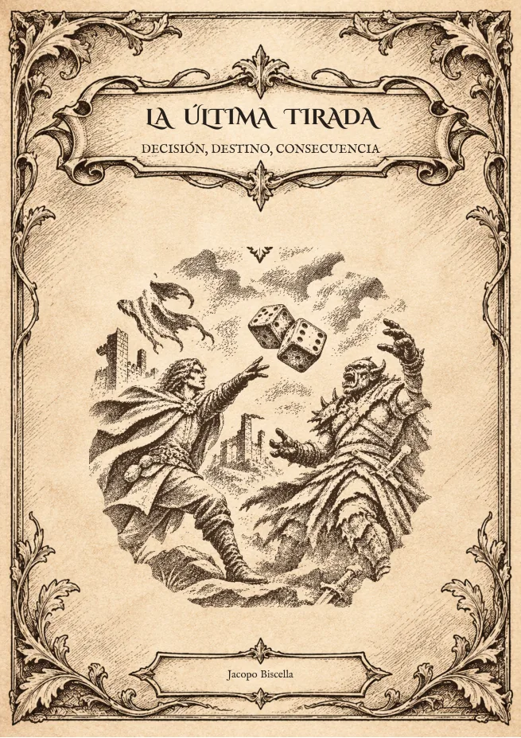

Una mecánica para todas las acciones
Combatir, escabullirse, persuadir y lanzar conjuros usan la misma regla.
Un juego de Jacopo Biscella
Un juego de rol fantástico ágil, basado en dados comunes de seis caras, decisiones importantes y aventuras que responden a tus acciones.

Dados comunes de seis caras · 2d6+
✧Sin iniciativa rígida ni cuadrícula
✧Las decisiones importan
Una mecánica de dados, cuatro Atributos y un mundo abierto. Las Habilidades y las circunstancias cambian cómo se interpretan los dados.
El combate es una conversación estructurada sin turnos rígidos ni cuadrículas. La magia tiene riesgos y un Crítico fallido exige un enfoque nuevo.
Un juego de rol para quienes no tienen tiempo para los juegos de rol.
Tienes una vida ocupada, pero quieres contar historias con amigos. Solo necesitas una ficha y dados corrientes de seis caras.
Combatir, escabullirse, persuadir y lanzar conjuros usan la misma regla.
Sin turnos rígidos ni cuadrículas: describes, tiras y descubres las consecuencias.
Los Grimorios tienen costes y pueden provocar reacciones adversas que afecten al grupo.
Los descubrimientos, defectos y decisiones determinan los avances.
Heridas y Fatiga comparten una misma reserva de Puntos de Vida.
Solo se utilizan dados comunes de seis caras (d6): sin dados especiales ni sets exclusivos.
| Nivel | Tirada |
|---|---|
| Inexperto | 2d6, conserva el menor |
| Competente | 1d6 |
| Experto | 2d6, conserva el mayor |
Dos o más seises producen un Crítico. El Esfuerzo añade un dado a cambio de una Herida de Fatiga.
Las reglas básicas están completas y se pueden probar. El juego sigue en desarrollo y agradecemos los comentarios.
Leer las reglas
{{ u.catalog.first }}
{{ u.intro_label }}
{{ u.catalog.intro_short }}